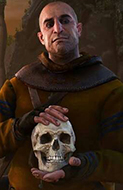

Selecione um personagem
- 
Geralt de Rivia
Geralt de Rivia foi um bruxo lendário da Escola do Lobo que viveu durante o século XIII. Ele amava a feiticeira Yennefer e se tonou pai adotivo de Ciri, a princesa do reino de Cintra.
Geralt de Rivia foi um bruxo lendário da Escola do Lobo que viveu durante o século XIII. Ele amava a feiticeira Yennefer e se tonou pai adotivo de Ciri, a princesa do reino de Cintra.